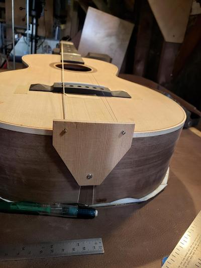

Instruments and Amplification
Robert's Gear

Stringphonic Guitars - Witmeyer's current number one is a Dell'Arte prototype made by Harry Takamoto at Stringphonic guitars in Japan. The guitar was sold to Robert by gypsy jazz impresario Alain Cola, who is credited with bringing gypsy jazz acoustics to the American masses. Alain was kind enough to sell Robert one of his prototypes, igniting a musical romance for the ages. The petite bouche model features a solid bear-claw spruce top, mahogany neck, and laminate Brazilian Rosewood back and sides (more than likely actually Pau Ferro wood). The guitar had a K&K Pure Maccaferri pickup added later, and was refetted by Keith Holland.
Di Mauro Guitars - acquired from Samson Schmitt, Robert is currently restoring an old Antoine Di Mauro St Louis Blues petite bouche model. The guitar was the first legit gypsy acoustic guitar Samson owned, and was given to him by his dad and original owner, Gypsy Jazz legend Dorado Schmitt. The guitar needs serious work, but Witmeyer looks forward to performing the song "Bossa Dorado" and the guitar owned by the song's composer when it is fully restored.
Vega Banjo - Robert inherited a 100 year old Vega plectrum banjo which he incorporates into the set favorites like Fat's Waller's "Ain't Misbehavin" and the Orginal Dixieland Jazz band's hit "Tiger Rag."
EML Plectrums - EML picks were handmade in California by Eric Lopez using Casein, a synthetic tortoiseshell material made from milk and vinegar. Friends with Robert for many years now, Eric created a handmade signature pick for Witmeyer, which he uses primarily with his Stringphonic petite bouche. Other gauge and shape EML picks are paired with Witmeyer's other instruments, as he loves the tone and feel of Eric's creations.
Wegen Plectrums - The group also uses a variety of European-made Wegen picks, which are popular among the gypsy jazz community.
Recording King/ VHT amps - while this style of music is primarily acoustic, inevitably the band has to amp up for some of the larger shows. Their main goal is to have the acoustic electric amp sound as true to the timbre of the acoustic instrument as possible. The group finds the Recording King songwriter 60 to be the perfect amp for such a demand. It's clean, light, looks good, and most importantly, does a stellar job retaining the unique tone of a gypsy acoustic. Ron also play's through a VHT Amp.
Ron's Gear
La France Luthiers - Djangatos Rhythm Guitarist Ron La France is also an accomplished luthier, and builds myriad string instruments. Robert proudly plays Ron's builds, and looks forward to adding a La France Luthiers Mandolin and acoustic guitar to future Djangatos performances.
ART Tube Preamp- the K&K systems that Djangatos employs are passive, and as a result, lower output. To access the best possible tones, the group uses a ART Tube Preamp to sweeten the pick up sound, and goose the output going to the Recording King Songwriter 60. The result is tonal perfection.
Optima Hot Club Gypsy Fire Strings - Made in Germany, little beefier tone for brighter acoustics. Primary string used on the stringphonic.
Arrow Guitars and Mandolins- Ron acquired this 12 fret Grand Bouche guitar through his long time friend, acclaimed jazz guitarist, Eric Skye who ordered it from Oregon luthier Paul Lestock. The guitar has a highly figured solid Sapele back and sides, bear claw Sitka spruce top and a mahogany neck. Mr. Lestock's luthier skills are on full display with this beautiful, light and powerful instrument.
Eric Skye's websiteStringphonic Guitars - Ron also plays a Stringphonic replica of the Di Mauro Chorus which was acquired through Django Guitars at the suggestion of Robert. The Chorus model features a solid spruce top, mahogany neck, and laminate Brazilian Rosewood back and sides (more than likely actually Pau Ferro wood). The guitar had a K&K Pure Maccaferri pickup added later.
Django Guitars Plectrums - Django Guitar picks are handmade in California by Tommy Davy using Casein, a synthetic tortoiseshell material made from milk and vinegar. Ron uses a prototype pick when he plays the Arrow that he bought from Mr. Davy at one of the Los Gatos Gypsy Swing Club DJams and a Django Guitars #1 pick when he plays the Chorus.